Shimomura Mieruka ProjectShimomura Mieruka Project
The SMK Project is an undertaking designed to put the Shimomura philosophy that “the highest quality is produced by the best environment” into practice. In 2009, manufacturing and operations systems were completely updated to improve operations and make results visible with the goals of invigorating core activities, contributing to financial results, and enhancing the Shimomura brand. We will deliver the highest-quality products that meet customer needs based on a sincere desire for improvement and the ability to get things done in order to move forward.
The entrances at all Shimomura plants have an information & notice board that display quality, safety, environmental, and production related issues that the organization needs to address. Fundamental principles, targets, and details of actions relating to these topics are displayed at the most visible location so that all employees as well as outside visitors can understand what Shimomura is pursuing. By making quality management, risk management, environmental management, and production management visible as the pillars of action, this program contributes to the comprehensive sharing of information and the manufacture of high-quality and safe products.

Shimomura plants consist of a passageway that extends in a straight line with equipment and products awaiting delivery arranged on the sides. All personnel strive to keep the worksite organized and tidy and make comprehensive efforts to eliminate contamination and waste. The idea is that responding quickly to defects that occur in the manufacturing process and keeping the clean working environment in order to maintain high quality product that keeps workers’ motivation in highest spirit. A garden where employees can relax is located in one area of the plant site, and various measures to enhance the work environment are linked to manufacturing the highest-quality products.
An SMK Area has been established on each production line as a means of reflecting the opinions of on-site workers in manufacturing. Areas of work improvement, targets, and effects are indicated for each line, and the quality of production activities is raised by reviewing this information. Problem solving through visualization is made the standard leading to improved communications, consideration, the elimination of irregular habits, and reduction of employee workloads as well as overall facilitation of work. Quality levels are continuously raised in all processes.
Young technicians who want to acquire professional skills receive direct guidance from more experienced employees who have achieved mastery in areas such as assessing materials and efficiently using equipment and make ceaseless effort over time. Shimomura has adopted a visual system that uses videos of skilled proficiencies as a tool for supporting the rapid enhancement of skills by Young technicians. Using videos makes it possible to convey detailed techniques that cannot easily be explained in words.